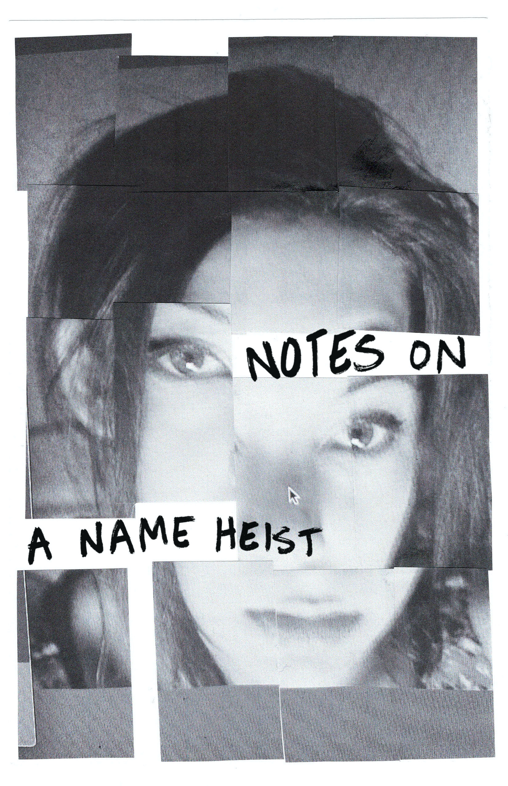

Intrusive Thing
A short collaged zine with a simple mantra.

Notes on a Name Heist
An abstract memoir on the author’s experience with brownness, queerness, and the effects of growing up in an immigrant household–a not so detailed tutorial on changing your own name.

Thing is God
An epic poem about the fantastic and tragic nature of queer love.